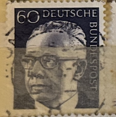
| SOURCE | TITLE| IMAGE MATCH | click to source page |
| eBay | GERMANY WEST DEUTSCHE BUNDESPOST 1970 GUSTAV HEINEMANN 20 Green - USED TKS222* | eBay |  |
| eBay | Germany - 1970 - 20Pfg - Gustav Heinemann - #17928 | eBay | 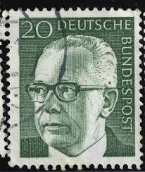 |
| eBay | Germania B 1972 Gustav Heinemann Presidente Politico Politica Persone 7V Set Mnh | eBay | 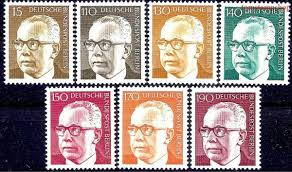 |
| Alamy | Postage stamp from the Federal Republic of Germany in the Federal President Dr. Gustav Heinemann series issued in 1970 Stock Photo - Alamy | 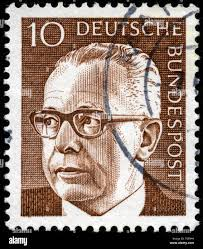 |
| Alamy | Gustav Heinemann Portrait German President Federal Republic Democracy Heritage Gray! This elegant German definitive stamp issued 1970-1971 by the Deut Stock Photo - Alamy |  |
| Mystic Stamp | 1029 - 1970 Germany - Mystic Stamp Company |  |
| eBay UK | BRD FRG #Mi691 MNH 1972 Gustav Heinemann President [1039 YT516B SG1548] | eBay UK | 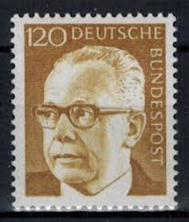 |
| Shutterstock | 2+ Thousand Deutsche Bundespost Royalty-Free Images, Stock Photos & Pictures | Shutterstock | 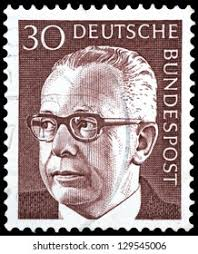 |
| Shutterstock | Germany Circa 1970 Stamp Printed Germany Stock Photo 244874419 | Shutterstock | 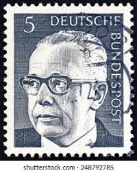 |
| Shutterstock | 3+ Hundred Mark Walters Royalty-Free Images, Stock Photos & Pictures | Shutterstock | 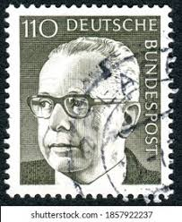 |
| lastdodo.com | Dr. Gustav Heinemann 190 (1973) - Germany - LastDodo |  |
| Etsy | Deutsches Stamps - Etsy Denmark | 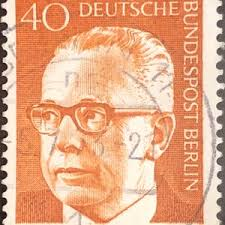 |
| eBay | BERLIN 9N286A - President Gustav Heinemann "1972 Olive" (pc17762) | eBay |  |
| Alamy | 1970s portrait with glasses hi-res stock photography and images - Alamy | 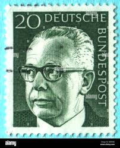 |
| Todocolección | alemania 1976 michel 895 ** mnh - 15/41 - Buy Antique stamps of Germany on todocoleccion |  |
| eBay | BRD FRG #Mi730 MNH 1972 Gustav Heinemann President [1041 YT516E SG1551] | eBay |  |
| eBay | WEST BERLIN # 9N294 MNH PRESIDENT HEINEMANN | eBay | 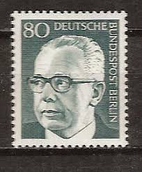 |
| iStock | German Post Stamp Showing Gustav Heinemann Stock Photo - Download Image Now - 1960, Air Mail, Brown - iStock | 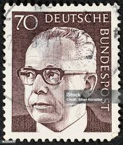 |
| eBay | BRD FRG #Mi644 MNH 1970 Gustav Heinemann President [1038 YT516 SG1546] | eBay | 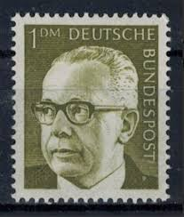 |
| eBay | STAMP US SCOTT 3426 "Claude Pepper" 33 CENT 2000 MNG PB OF 4 LR | eBay | 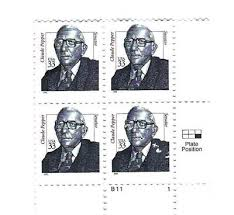 |
| Amazon.nl | BRD (BR.Duitsland) Mi.-Aantal.: 689-692 (compleet.Kwestie) 1971 Gustav Heinemann (Postzegels voor verzamelaars) : Amazon.nl: Speelgoed & spellen | 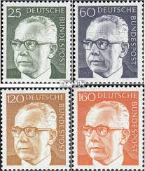 |
| eBay | BERLIN 9N284 - President Gustav Heinemann "1971 Dark Grey" (pc17765) | eBay |  |
| eBay | N°861C STAMP DEUTSCHE BUNDESPOST BERLIN Used 50 | eBay | 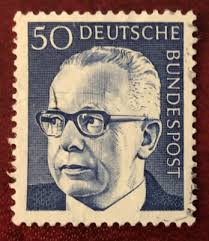 |
| iStock | Former German President On An Old Stamp Stock Photo - Download Image Now - Gustav Heinemann, 1971, Adults Only - iStock | 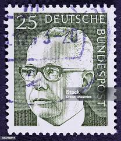 |
| eBay | WEST GERMANY # 1036 MNH PRESIDENT GUSTAV HEINEMANN | eBay | 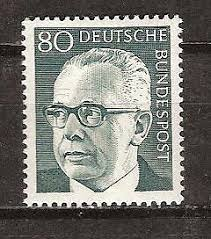 |
| Mystic Stamp Company | 1031-32 - 1971 Germany - Mystic Stamp Company |  |
| Shutterstock | Stamp Prize: Over 2,596 Royalty-Free Licensable Stock Photos | Shutterstock |  |
| Alamy | Postage stamp from the Federal Republic of Germany in the Federal President Dr. Gustav Heinemann series issued in 1971 Stock Photo - Alamy | 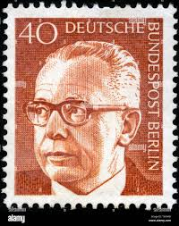 |
| eBay | WEST BERLIN # 9N291 MNH PRESIDENT HEINEMANN | eBay | 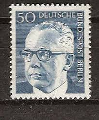 |
| Shutterstock | deutsche_post": Over 5,976 Royalty-Free Licensable Stock Photos | Shutterstock | 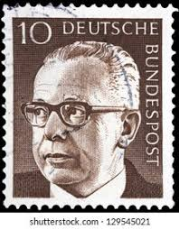 |
| eBay | Berlin 1971 MNH Mi 367 Sc 9N294 President Gustav Heinemann ** | eBay | 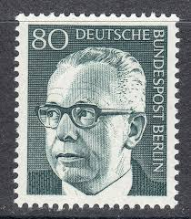 |
| H.E. Harris | 2000 1¢ American Kestrel Self-Adhesive Plate Block - H.E. Harris | 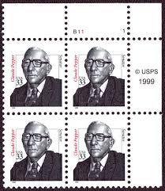 |
| eBay | GERMANY WEST DEUTSCHE BUNDESPOST 1970 GUSTAV HEINEMANN 10 BROWN - USED TKS272* | eBay | 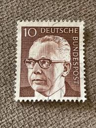 |
| eBay | Lot of 12 Great American USA Stamp Block MNH plate blocks 2938 2189 1868 2181 | eBay | 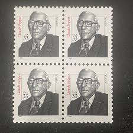 |
| eBay | Germany - 1970 - 30Pfg - Gustav Heinemann - #17929 | eBay |  |
| eBay | Scott #3426 Claude Pepper Single 33¢ Stamp - MNH | eBay | 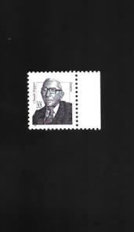 |
| eBay | US Plate Block Stamp Scott# 3426 Sen. Claude Pepper 2000 MNH L591 | eBay | 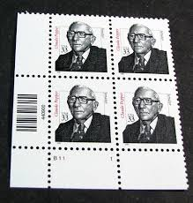 |
| eBay | GERMANY WEST DEUTSCHE BUNDESPOST 1970 GUSTAV HEINEMANN 5 German USED TKS226* | eBay | 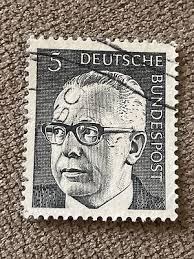 |
| eBay | Germany Berlin 1971 Federal President Gustav Heinemann MNH | eBay | 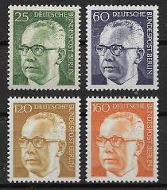 |
| eBay | US Stamps Scott 3426 33c 2000 plate block Claude Pepper M/NH Fresh | eBay | 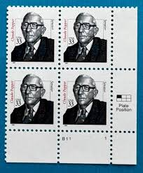 |
| vividagallery.com | Gustav Heinemann Portrait German President Federal Republic Demo #3 Art Print by Vivida Gallery - Vivida Gallery | 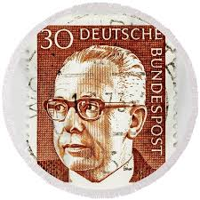 |
| eBay | WEST GERMANY SC #1043 1973 190 PF HEUSS DEFINITIVE POSTALLY USED SINGLE STAMP | eBay | 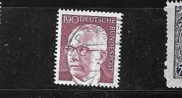 |
| eBay | FDC 1986 - Pierre COT - 1895-1977 (3383) | eBay | 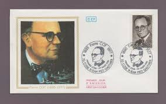 |
| eBay | West Germany - 1970 - Gustav Heinemann - 1DM - Used - #08 | eBay | 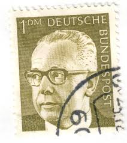 |
| eBay | STAMP US SCOTT 3426 "Claude Pepper" 33 CENT 2000 MNH PB OF 4 UR | eBay | 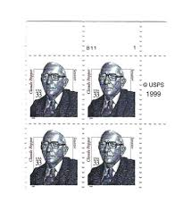 |
| Free stamp catalogue | Stamps with the theme Justice - Freestampcatalogue.com - The free online stampcatalogue with over 500.000 stamps listed. | 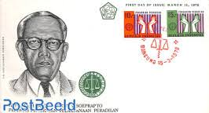 |
| eBay | China ROC - Taiwan 1990 (1880) Mint never Hinged. | eBay | 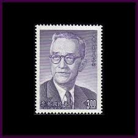 |
| eBay | Claude Pepper 33c Stamp Combo FDC William Cachet Sc#3426 10967 W/1263,2011 | eBay | 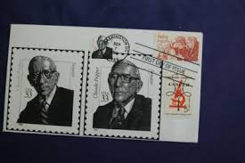 |
| Colnect | Stamp: Ivo Andric (1892. - 1975.) (Bosnia and Herzegovina(BIH Nobel Laureates) Mi:BA 463,Yt:BA 533,Sg:BA 878,Un:BA 465 📮 | 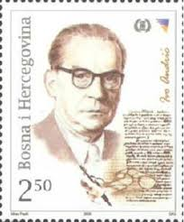 |
| PICRYL | Siegelmarke Königlich - Sächsische - Station - Grossenhain C.G.B. W0209236 - PICRYL - Public Domain Media Search Engine Public Domain Search | 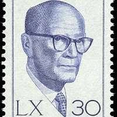 |
| eBay | germany berlin sc# 9n294 1970 president mnh 80pf old vintage very fine stamp | 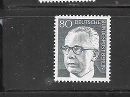 |
| eBay | 1981 Stamp #1874 Everett Dirksen Used | eBay | 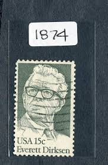 |
| eBay | Germany 1971 MNH Mi 689-692 President Gustav Heinemann.Minister of Justice ** | eBay | 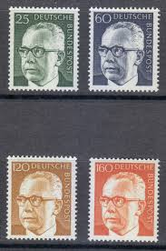 |
| Kenmore Stamp | #3426 - 33¢ Claude Pepper | 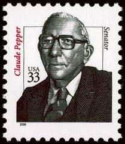 |
| eBay | NETHERLANDS ANTILLES Scott 717-20 ( 4v ) Famous Men F/VF Used ( 1994 ) | eBay | 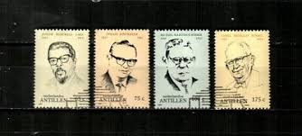 |
| eBay | 👉 South Kasai/Congo/ZAIRE 1961 President Albert D. Kalonji MNH BLACK HERITAGE | eBay | 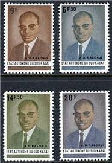 |
| eBay | China PRC Scott 2416-19 Mint Never Hinged Very Fine SCV $2.15 | eBay | 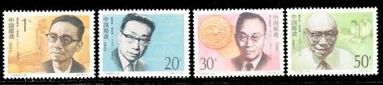 |
| Linda Hall Library | Albert Claude - Linda Hall Library | 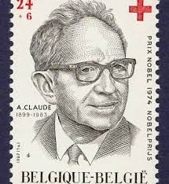 |
| eBay | Germany Berlin 1971 year mint stamps MNH(**) Michel# 393-396 | eBay | 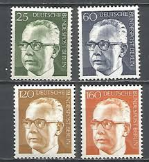 |